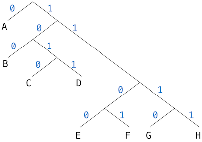

Due by 11:59pm on Saturday, 8/2
Readings: You might find the following references useful:
Submission: See the online submission instructions. We have provided a hw10.py starter file for the questions below.
This homework is designed to test your ability to approach a new problem and understand how to solve it with the tools you've learned. It is as much about understanding what the problem is asking, as the tree recursion involved.
We consider the problem of representing text as a sequence of ones and zeros (bits). For example, the ASCII standard code used to represent text in computers encodes each character as a sequence of seven bits, and 128 characters are encoded in total. In general, if we want to distinguish n different symbols, we will need to use log base 2 of n bits per symbol.
As a simpler example, consider encoding only A, B, C, D, E, F, G, and H. We can choose a code with three bits per character, for example:
A 000C 010E 100G 110B 001D 011F 101H 111
With this code, the message:
BACADAEAFABBAAAGAH
is encoded as the string of 54 bits:
001000010000011000100000101000001001000000000110000111
Codes such as ASCII and the A-through-H code above are known as fixed-length codes, because they represent each symbol in the message with the same number of bits. It is sometimes advantageous to use variable-length codes, in which different symbols may be represented by different numbers of bits. If our messages are such that some symbols appear very frequently and some very rarely, we can encode data more efficiently (i.e., using fewer bits per message) if we assign shorter codes to the frequent symbols. Consider the following alternative code for the letters A through H:
A 0C 1010E 1100G 1110B 100D 1011F 1101H 1111
With this code, the same message as above is encoded as the string:
100010100101101100011010100100000111001111
This string contains 42 bits, so it saves more than 20% in space in comparison with the fixed-length code shown above.
One of the difficulties of using a variable-length code is knowing when you have reached the end of a symbol in reading a sequence of zeros and ones. One solution is to design the code in such a way that no complete code for any symbol is the beginning (or prefix) of the code for another symbol. Such a code is called a prefix code. In the example above, A is encoded by 0 and B is encoded by 100, so no other symbol can have a code that begins with 0 or with 100.
In general, we can attain significant savings if we use variable-length prefix codes that take advantage of the relative frequencies of the symbols in the messages to be encoded. One particular scheme for doing this is called the Huffman encoding method, after its discoverer, David Huffman. A Huffman code can be represented as a binary tree whose leaves are the symbols that are encoded.
Each symbol at a leaf is assigned a weight (which is its relative frequency), and each non-leaf node contains a weight that is the sum of all the weights of the leaves lying below it. The weights are not used in the encoding or the decoding process. We will see below how they are used to help construct the tree.
The figure below shows the Huffman encoding tree for the A-through-H prefix code given above.

Given an alphabet of symbols and their relative frequencies, how do we construct the tree that will encode messages with the fewest bits? Huffman gave an algorithm for doing this and showed that the resulting code is indeed the best variable-length code for messages where the relative frequency of the symbols matches the frequencies with which the code was constructed.
The algorithm for generating a Huffman tree is very simple. The idea is to arrange the tree so that the symbols with the lowest frequency appear farthest away from the root. Begin with the set of leaf nodes, containing symbols and their frequencies, as determined by the initial data from which the code is to be constructed. Now find two leaves with the lowest weights and merge them to produce a node that has these two nodes as its left and right branches. The weight of the new node is the sum of the two weights. Remove the two leaves from the original set and replace them by this new node.
Now continue this process. At each step, merge two nodes with the smallest weights, removing them from the set and replacing them with a node that has these two as its left and right branches. The process stops when there is only one node left, which is the root of the entire tree.
Wikipedia has an excellent animation of this process.
Here is how the previous example Huffman tree is generated, where trees are described by the set of letter they contain, along with their weight:
Initial leaves:
{(A 9) (B 3) (C 1) (D 1) (E 1) (F 1) (G 1) (H 1)}
{(A 9) (B 3) ({C D} 2) (E 1) (F 1) (G 1) (H 1)}
{(A 9) (B 3) ({C D} 2) ({E F} 2) (G 1) (H 1)}
{(A 9) (B 3) ({C D} 2) ({E F} 2) ({G H} 2)}
{(A 9) (B 3) ({C D} 2) ({E F G H} 4)}
{(A 9) ({B C D} 5) ({E F G H} 4)}
{(A 9) ({B C D E F G H} 9)}
{({A B C D E F G H} 17)}The algorithm does not always specify a unique tree, because there may not be unique smallest-weight nodes at each step. Also, the choice of the order in which the two nodes are merged (i.e., which will be the right branch and which will be the left branch) is arbitrary.
Let us look at the starter code. There are two classes, HuffmanTree
and HuffmanLeaf, both of which inherit from the Tree class.
The HuffmanLeaf class represents all of the leaves, and so it has a
single letter and the frequency of that letter. The HuffmanLeaf
class has an instance attribute letter that is not present in the
HuffmanTree class. The children instance attribute will always be
the empty list for a HuffmanLeaf.
The HuffmanTree class represents all of the intermediate nodes.
Once constructed, a HuffmanTree will always have exactly two
children, each of which is either a HuffmanTree or a HuffmanLeaf.
Since it is guaranteed to have exactly two children, it defines
left_child and right_child property methods.
For both classes, the datum will always be a list of letters that we
know how to encode. For a HuffmanLeaf, the list contains just one
letter. For a HuffmanTree, it contains the letters of all of the
leaves found in the tree. The frequency will be the frequency with
which that node is used. For the HuffmanTree, the frequency is
just the sum of the frequencies of its children.
HuffmanTree. Here is
the implementation of the function (not method!)
make_huffman_tree, which creates a HuffmanTree:
children = []
for i in range(len(letters)):
children.append(HuffmanLeaf(letters[i], frequencies[i]))
return HuffmanTree(*children)All it does is create a lot of HuffmanLeaf objects and pass them in
to HuffmanTree. It is then up to HuffmanTree to create the right
Huffman tree from these objects. Looking at the __init__ method of
HuffmanTree:
def __init__(self, *children):
letters = []
for child in children:
letters += child.datum
Tree.__init__(self, letters, *children)
# Actually creating the encoding
while len(self.children) > 2:
self.merge_two_smallest()The first four lines simply set the datum to be a list of letters
and the children to be the children using the __init__ method of
the parent Tree class. The actual algorithm of making the correct
Huffman tree is in the next two lines, which just say to keep merging
the two smallest children until we are left with just two children.
This is exactly the algorithm we had before.
Your job is to implement merge_two_smallest. Once you implement it
correctly, the doctests for make_huffman_tree should pass.
merge_two_smallest should work as follows:
HuffmanTree object from those two children.self.You may find the key argument of the min function to be useful.
The documentation can be found
here. We
have given you an example of how to use it in order to find the child
with the smallest frequency:
def merge_two_smallest(self):
smallest = min(self.children, key=lambda x: x.frequency)
"*** YOUR CODE HERE ***"
self.children = [] # Fix MeNote: Since merge_two_smallest is called inside the __init__
method, you are not guaranteed that the HuffmanTree satisfies all
of the requirements of a HuffmanTree. In particular, it will
usually have more than 2 children, and so you cannot use
left_child and right_child. You should be mutating the instance
attribute children instead.
Given a Huffman tree, when we need to encode a character, we simply
need to figure out whether we need to go left or right at each node.
If we go left, then there is a 0 in the encoding, and if we go
right, there is a 1 in the encoding.
For example, in the same tree as before, to encode B, we would
realize that we need to go right (1), then left (0), then left
(0), and so the encoding is 100.
encode function:
def encode(self, string):
""" Returns a string representing the Huffman encoding of the
character.
>>> t = make_example_huffman_tree()
>>> t.encode('BACADAEAFABBAAAGAH')
'100010100101101100011010100100000111001111'
"""
result = ''
for character in string:
result += self.encode_character(character)
return resultencode iterates through the string and encodes each character and
accumulates the result in the result.
Implement encode_character, which encodes a single character
according to the process above. Since this must be called after the
__init__ method is done, we are guaranteed that there are exactly 2
children, and so you can use left_child and right_child. Hint:
You can figure out whether to go left or right by looking at the
datum, which contains a list of letters available in the tree.
# HuffmanTree class
def encode_character(self, character):
""" Returns a string representing the Huffman encoding of the
character.
>>> t = make_example_huffman_tree()
>>> t.encode_character('E')
'1100'
>>> [t.encode_character(letter) for letter in t.datum]
['0', '100', '1010', '1011', '1100', '1101', '1110', '1111']
"""
assert character in self.datum
"*** YOUR CODE HERE ***"
# HuffmanLeaf class
def encode_character(self, character):
assert character == self.letter
"*** YOUR CODE HERE ***"To decode a bit sequence using a Huffman tree, we begin at the root and use the successive zeros and ones of the bit sequence to determine whether to move down the left or the right branch. Each time we come to a leaf, we have generated a new symbol in the message, at which point we start over from the root of the tree to find the next symbol.
For example, suppose we are given the tree above and the sequence
10001010Starting at the root, we move down the right branch, (since the first bit of the string is 1), then down the left branch (since the second bit is 0), then down the left branch (since the third bit is also 0). This brings us to the leaf for B, so the first symbol of the decoded message is B.
Now we start again at the root, and we make a left move because the next bit in the string is 0. This brings us to the leaf for A. Then we start again at the root with the rest of the string 1010, so we move right, left, right, left and reach C. Thus, the entire message is BAC.
encode, we will decode by decoding a single
character at a time. However, we don't know how long the encoding of
a single character is, and so we would not know where to search for
the next character to decode. As a result, we need decode_character
to return two things - the first decoded character, and the rest
of the (undecoded) bits. Then we can implement decode:
def decode(self, code):
""" Decodes code to recover the original message.
code is a Huffman encoding created from this HuffmanTree.
>>> t = make_example_huffman_tree()
>>> t.decode('100010100101101100011010100100000111001111')
'BACADAEAFABBAAAGAH'
"""
result = ''
while code:
character, code = self.decode_character(code)
result += character
return resultImplement decode_character. It must return two things - the
first decoded character, as well as the rest of the (undecoded) bits.
Don't forget that any recursive call you make to decode_character
must also return these two things.
# HuffmanTree class
def decode_character(self, code):
""" Decodes a single character from code.
Returns the character, and the rest of the code (that has not
been decoded yet).
code is a Huffman encoding created from this HuffmanTree.
>>> t = make_example_huffman_tree()
>>> t.decode_character('0')
('A', '')
>>> t.decode_character('10001010')
('B', '01010')
"""
"*** YOUR CODE HERE ***"
# HuffmanLeaf class
def decode_character(self, code):
""" Decodes a character. Since a leaf has only one letter, it
must be that letter.
>>> leaf = HuffmanLeaf('A', 50)
>>> leaf.decode_character('010')
('A', '010')
"""
"*** YOUR CODE HERE ***"Build a Huffman encoding tree for the works of Shakespeare. How many bits does your Huffman encoding for the works of Shakespeare use? Normally, each character uses 8 bits. How many bits do the works of Shakespeare use without Huffman encoding? How much space do we save by using the Huffman encoding?
When testing software, it can be useful to count the number of times
that a function is called. Define a higher-order function
count_calls that returns two functions:
Your implementation should not include any lists or dictionaries:
def count_calls(f):
"""A function that returns a version of f that counts calls to f and can
report that count to how_many_calls.
>>> from operator import add
>>> counted_add, add_count = count_calls(add)
>>> add_count()
0
>>> counted_add(1, 2)
3
>>> add_count()
1
>>> add(3, 4) # Doesn't count
7
>>> add_count()
1
>>> counted_add(5, 6)
11
>>> add_count()
2
"""
"*** YOUR CODE HERE ***"(Hard) Fill out the foo class so that the doctests pass. You
are not allowed to use if.
class foo:
"""
>>> foo.y
[]
>>> foo.x
3
>>> cat = foo('Meow')
>>> cat.speak()
Meow
>>> cat.x
4
>>> foo = foo(foo) # OMG WHY
>>> foo.x
5
>>> bar = foo.bar('hello!')
>>> bar.speak()
hello!
>>> cat.x
4
"""
"*** YOUR CODE HERE ***"(Even Harder) Fill out the baz class so that the doctests pass.
Note: You will first need to copy over your solution from the
previous part into the new_foo class, replacing all instances of
foo with new_foo and bar with new_bar. This is so that the
doctests for foo and baz do not interfere with each other.
class new_foo:
class baz(new_foo):
""" Note: First we redo the doctests from the previous question.
>>> new_foo.y
[]
>>> new_foo.x
3
>>> cat = new_foo('Meow')
>>> cat.speak()
Meow
>>> cat.x
4
>>> new_foo = new_foo(new_foo) # OMG WHY
>>> new_foo.x
5
>>> new_bar = new_foo.new_bar('hello!')
>>> new_bar.speak()
hello!
>>> cat.x
4
>>> baz.y
[]
>>> cat.y.append(2)
>>> new_foo.new_bar.y
[2]
>>> baz.y
[2]
>>> new_foo.new_bar.x
6
>>> baz = baz(baz, baz) # ARGHHHH
>>> new_foo.new_bar.x
7
>>> baz.add_to_parent_y(4)
>>> baz.y
[2, 4]
>>> baz.new_bar.y
[2, 4]
>>> new_foo.new_bar.y
[2, 4]
>>> baz.add_to_baz_y(6)
>>> baz.y
[2, 4, 6]
>>> baz.new_bar.y
[2, 4, 6]
>>> new_foo.new_bar.y
[2, 4]
>>> baz.add_to_parent_y(8)
>>> baz.y
[2, 4, 6]
>>> baz.new_bar.y
[2, 4, 6]
>>> new_foo.new_bar.y
[2, 4, 8]
"""
"*** YOUR CODE HERE ***"